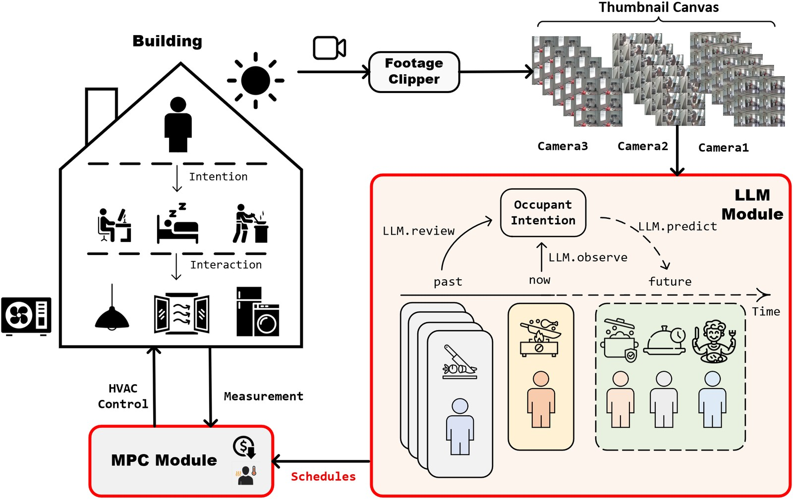

Published
An LLM that sees what you're about to do
- Problem
- What people intend to do next, such as cooking, working out, or taking a nap, changes how warm they want the room, which appliances they run, and what they expect from the HVAC. Presence sensors can tell that someone is home but not what they are about to do, so controllers often fall back on fixed schedules.
- What I did
- Designed and built a system that pairs a multimodal LLM with MPC. The LLM watches camera footage and infers what the occupant intends to do next. It turns that into predictions of metabolic rate, clothing, appliance use, and window state. The MPC plans the heat pump with these predictions, an RC model of the rooms fitted from measured data, and a heat pump model fitted from catalog data.
- Status
- Published as first author in Advances in Applied Energy, 2026. In a simulation driven by 13 hours of real video, it cut HVAC electricity by 60% and discomfort (unmet degree-hours) by 48%, compared with the same MPC on standard U.S. Department of Energy (DOE) schedules.